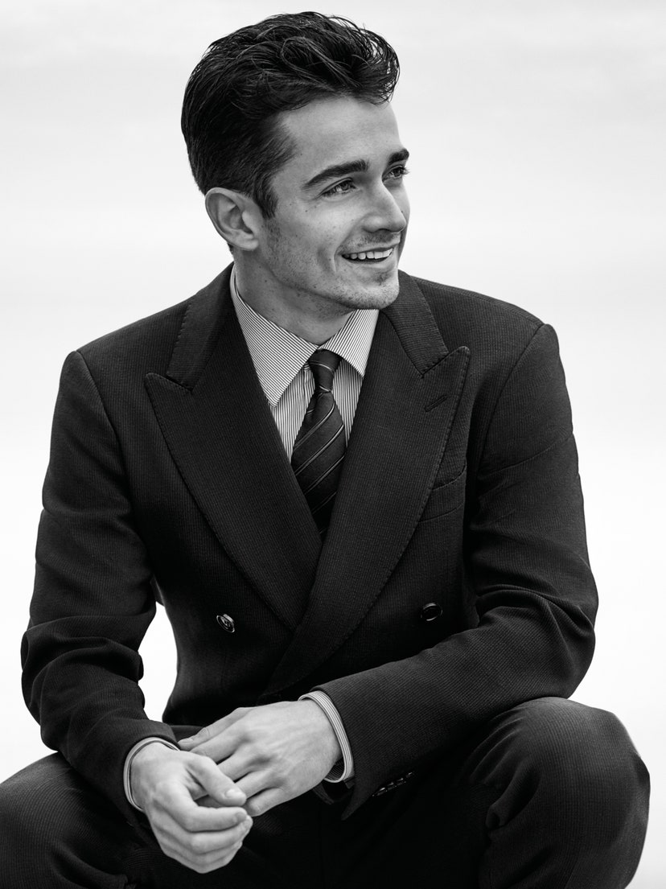

Charles Leclerc è il volto di Giorgio Armani Made to Measure 2020
di Italo Pantano
Charles Leclerc è il protagonista della campagna Giorgio Armani Made
to Measure per la primavera estate 2020.
È la prima campagna pubblicitaria per lo sportivo di Monaco che è stato
ritratto in una serie di scatti in bianco e nero realizzati da John
Balsom a Saint-Tropez, in Costa Azzurra, un luogo molto amato da Giorgio
Armani.
“Charles Leclerc è un pilota molto promettente. Ha avuto notevole
successo nonostante la giovane età, e questo è indice di volontà
e determinazione, oltre che di evidente talento. Ha un volto fresco
e una fisicità scattante che il mio Made to Measure esalta e accompagna",
dice Giorgio Armani.
L’abito su misura non ha età, e questi scatti ne sono la dimostrazione.

Il servizio Giorgio Armani Made to Measure è pensato per una clientela
maschile esigente, che desidera abiti unici, che rispecchino un gusto
personale, con le caratteristiche di scioltezza e naturalezza tipiche
dei capi Giorgio Armani. Il cliente vive un’esperienza di lusso e prende
parte al processo creativo attraverso la scelta del modello, del tessuto
e di tutti i dettagli.
Il servizio Made to Measure è disponibile nelle boutique Giorgio Armani
in tutto il mondo.